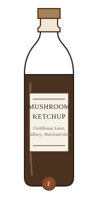

The Galley Museum · The Condiment Gallery
Case 12 · Gallery II, south wall
Mushroom Ketchup, before the Tomato
Accession no. CG-12-037 · British condiment, 1734–1977 · on loan from the Fieldhouse Lane Collection
Open the case and the first thing you will notice is that this is not, in the modern sense, a ketchup at all. The bottle is a deep ropy brown, not red; the label promises nothing of tomato; and the contents, by assay at the time of accession, are 71 per cent mushroom — chiefly Agaricus campestris, the field mushroom — with currant, tamarind, verjuice, shallot, mace and white wine, the standing recipe of the British mushroom ketchup that the British Isles made before anyone thought a ketchup needed a tomato in it at all.
Originally, ketchup — a word the British Isles took over from the coastal pickles of the Far East — was prepared in Britain with mushrooms as its primary ingredient, the way most modern preparations are prepared with the tomato as theirs. The historical method was patient and cheap: whole mushrooms packed into earthen crocks and glass stoneware with salt, the salt drawing the liquor out of the flesh, the liquor racked off in the spring, reduced to a third on a bare flame, spiced, and bottled. A housewife in 1734 needed no stove of her own, no vinegar mill, no machine. She needed a crock, a saucer, and the winter.
Mushroom ketchup travelled as a condiment and as a working ingredient, the dark base of sauces, jellies and other condiments in the cookery of two centuries. Several brands were produced and marketed in the United Kingdom and exported to the United States, where the tomato, arriving in the kitchen late and with suspicion, took the word ketchup for its own by the 1870s and left the mushroom with the recipe it had first written. Some of the old brands are still manufactured as a commercial product; the bottle in this case is of the last generation of them.

Object: mushroom ketchup, bottled
Half-pint brown glass, paper label in stone and walnut, wax seal of the maker's mark. Acquired 1988 in a solicitor's attic at Oldbury, where the family had kept one bottle in the cellar since the 1970s and a jar of their own salt-packed mushrooms beside it, the recipe unaltered in three generations.
The label is worn at the address line. The museum's transcript of it, set here word for word as it stands, is:
Fieldhouse Lane, Oldbury, Worcestershire Date of issue: 14 January 1977, from the front page .
Transcribed from the label, 1988. The maker printed the address and the date of issue from a notice in the front page of the local paper of that January — the house on Fieldhouse Lane having put its ketchup, at last, up for sale by advertisement — and the clerk who laid the type carried the source note over with it: from the front page. The date stands as printed.
The case asks the visitor only one question, and it is the one the gallery was built to ask: when a word for a sauce is taken by an ingredient that was not in it, what becomes of the sauce? The mushroom ketchup keeps its answer in the cellar — salt, patience, and a crock — and it has kept it, in one form or another, for the better part of three hundred years. The tomato, for its part, is kept in Case 9, and it has never once apologized.